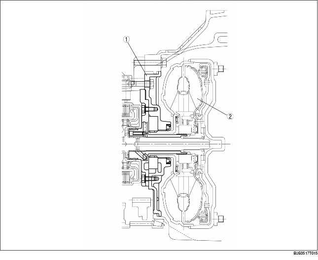

Oil pump outline • The light-weight, compact, and quiet trochoid gear type oil pump is adopted to reduce the pump driving torque. • The direct drive type oil pump is adopted and placed behind the torque converter. 1 Oil pump 2 Torque converter